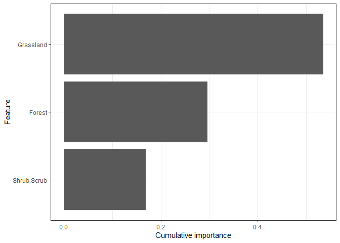
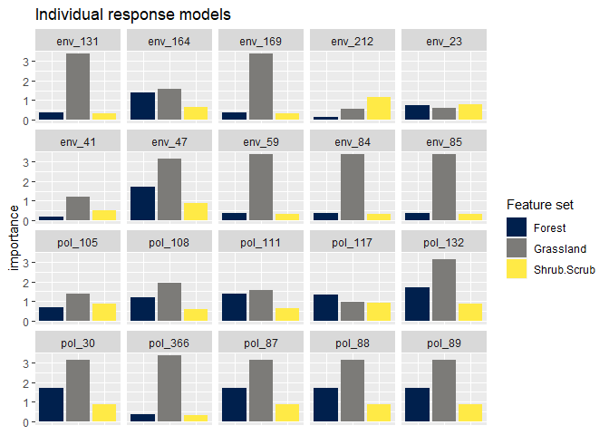
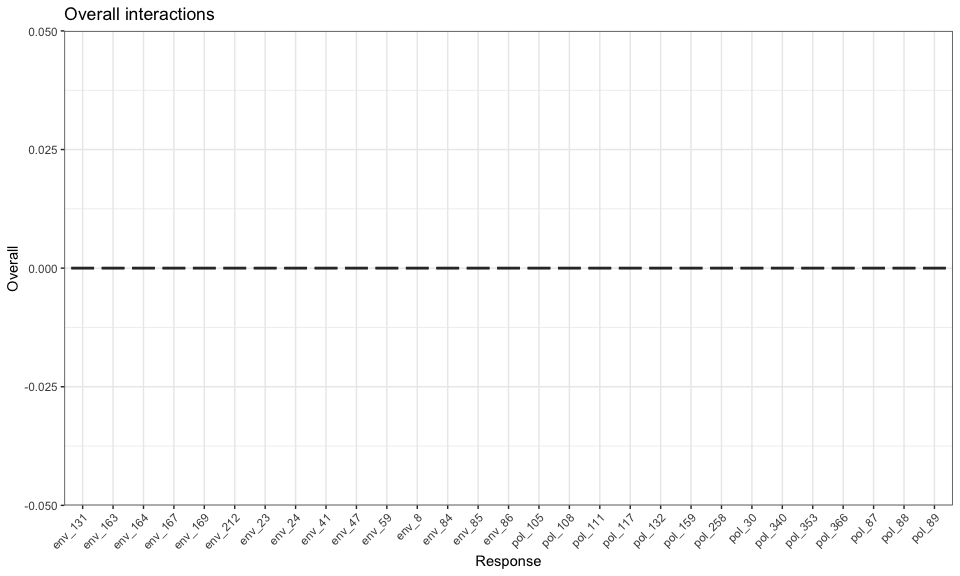

This package aims to enable users to build and interpret multivariate machine learning models harnessing the tidyverse (tidy model syntax in particular). This package builds off ideas from Gradient Forests Ellis et al 2012), ecological genomic approaches Fitzpatrick and Keller, 2014 and multi-response stacking algorithms [Xing et al 2019].
This package can be of use for any multi-response machine learning problem, but was designed to handle data common to community ecology (site by species data) and ecological genomics (individual or population by SNP loci).
Recent mrIML publications
Fountain-Jones, N. M., Kozakiewicz, C. P., Forester, B. R., Landguth, E. L., Carver, S., Charleston, M., Gagne, R. B., Greenwell, B., Kraberger, S., Trumbo, D. R., Mayer, M., Clark, N. J., & Machado, G. (2021). MrIML: Multi-response interpretable machine learning to model genomic landscapes. Molecular Ecology Resources, 21, 2766– 2781. https://doi.org/10.1111/1755-0998.13495
Sykes, A. L., Silva, G. S., Holtkamp, D. J., Mauch, B. W., Osemeke, O., Linhares, D. C.L., & Machado, G. (2021). Interpretable machine learning applied to on-farm biosecurity and porcine reproductive and respiratory syndrome virus. Transboundary and Emerging Diseases, 00, 1– 15. https://doi.org/10.1111/tbed.14369
Quick start
mrIML is designed to be used with a single function call or to be used in an ad-hoc fashion via individual function calls. In the following section we give an overview of the simple use case. For more on using each function see the function documentation. The core functions for both regression and classification are: mrIMLpredicts, mrIMLperformance, and mrvip, mrFlashlight, andmrProfileplots.
We also allow users to get bootstrapped estimations of partial dependencies and variable importance using mrBootstrap.
The first step to using the package is to load it as follows.
Model component
Now all the data is loaded and ready to go we can formulate the model using tidymodel syntax. In this case we have binary data (SNP presence/absence at each loci) but the data could also be counts or continuous (the set_model argument would be “regression” instead of “classification”). The user can specify any model from the ‘tidymodel’ universe as ‘model 1’ (see https://www.tidymodels.org/find/ for details). However, we have done most of our testing on random forests (rf) and glms (generalized linear models). Here we will specify a random forest classification model as the model applied to each response.
model_rf <-rand_forest(trees = 100,
mode = "classification",
mtry = tune(),
min_n = tune()) %>% #100 trees are set for brevity. Aim to start with 1000
set_engine("randomForest")
mrIMLpredicts
This function represents the core functionality of the package and includes results reporting, plotting and optional saving. It requires a data frame of X t( the snp data for example) and Y represented by the covariates or features.
Load example data (cite) data from mrIML.
fData <- filterRareCommon (Responsedata,
lower=0.4,
higher=0.7)
data <- fData[1:20]Parallel processing
MrIML provides uses the flexible future apply functionality to set up multi-core processing. In the example below, we set up a cluster using 4 cores. If you don’t set up a cluster, the default settings will be used and the analysis will run sequentially.
# detectCores() #check how many cores you have available. We suggest keeping one core free for internet browsing etc.
cl <- parallel::makeCluster(4)
plan(cluster,
workers=cl)
Y <- fData #For simplicity when comparing
#Define set the outcomes of interest
str(Features)
#> 'data.frame': 20 obs. of 19 variables:
#> $ Grassland : num 0.07 0.0677 0.1845 0.0981 0.1578 ...
#> $ Shrub.Scrub : num 0.557 0.767 0.524 0.786 0.842 ...
#> $ Forest : num 0.01072 0.030588 0.008615 0.000662 0.000616 ...
#> $ HighlyDev : num 0 0 0.00225 0 0 ...
#> $ Urban : num 0 0 0.00159 0 0 ...
#> $ Suburban : num 0.00357 0.13268 0.01325 0.00119 0 ...
#> $ Exurban : num 0.00622 0.03019 0 0.01906 0 ...
#> $ Altered : num 0.441 0.182 0.114 0.12 0 ...
#> $ Distance : num 1.321 0.492 3.231 5.629 4.739 ...
#> $ Latitude : num 33.8 33.8 33.8 33.8 33.8 ...
#> $ Longitude : num -118 -118 -118 -118 -118 ...
#> $ Age : int 3 0 3 2 3 3 2 3 3 3 ...
#> $ Sex : int 1 1 1 1 0 0 0 1 1 1 ...
#> $ Relatedness.PCO1: num -0.1194 -0.0389 -0.1618 -0.1811 -0.1564 ...
#> $ Relatedness.PCO2: num -0.1947 -0.0525 -0.321 -0.0827 0.1 ...
#> $ Relatedness.PCO3: num -0.191 -0.0874 0.0541 -0.0627 -0.0111 ...
#> $ Relatedness.PCO4: num 0.1117 0.2422 0.0974 0.2129 0.2259 ...
#> $ Relatedness.PCO5: num 0.06405 0.0706 0.03514 -0.00084 0.0894 ...
#> $ Relatedness.PCO6: num -0.0432 0.0683 -0.0805 0.2247 -0.055 ...
#Remove NAs from the feature/predictor data.
FeaturesnoNA<-Features[complete.cases(Features), ]
X <- FeaturesnoNA #For simplicity
#For more efficient testing for interactions (more variables more interacting pairs)
X <- FeaturesnoNA[c(1:3)] #Three features only
yhats_rf <- mrIMLpredicts(X=X,Y=Y, #specify which data to use
Model=model_rf, #what model
balance_data='no', #balance the data or not
mode='classification', #classification or regression
k=5,
tune_grid_size=5, #tuning parameters
seed = 123,
racing=F) #Set seed
#> | | | 0% | |== | 3% | |===== | 7% | |======= | 10% | |========== | 14% | |============ | 17% | |============== | 21% | |================= | 24% | |=================== | 28% | |====================== | 31% | |======================== | 34% | |=========================== | 38% | |============================= | 41% | |=============================== | 45% | |================================== | 48% | |==================================== | 52% | |======================================= | 55% | |========================================= | 59% | |=========================================== | 62% | |============================================== | 66% | |================================================ | 69% | |=================================================== | 72% | |===================================================== | 76% | |======================================================== | 79% | |========================================================== | 83% | |============================================================ | 86% | |=============================================================== | 90% | |================================================================= | 93% | |==================================================================== | 97% | |======================================================================| 100%
ModelPerf <- mrIMLperformance(yhats=yhats_rf,
Model=model_rf,
Y=Y,
mode='classification')
ModelPerf[[1]] #Predictive performance for individual responses
#> response model_name roc_AUC mcc sensitivity
#> 1 env_131 rand_forest 0.642857142857143 0.327326835353989 0.285714285714286
#> 2 env_163 rand_forest 0.238095238095238 -0.327326835353989 0
#> 3 env_164 rand_forest 0.895833333333333 0.534522483824849 0.5
#> 4 env_167 rand_forest 0.833333333333333 <NA> 1
#> 5 env_169 rand_forest 0.642857142857143 0.327326835353989 0.285714285714286
#> 6 env_212 rand_forest 0.444444444444444 0.272165526975909 1
#> 7 env_23 rand_forest 0.48 -0.333333333333333 0
#> 8 env_24 rand_forest 0.28 <NA> 1
#> 9 env_41 rand_forest 0.208333333333333 -0.408248290463863 0.333333333333333
#> 10 env_47 rand_forest 0.86 0.816496580927726 1
#> 11 env_59 rand_forest 0.642857142857143 0.327326835353989 0.285714285714286
#> 12 env_8 rand_forest 0.78125 <NA> 0
#> 13 env_84 rand_forest 0.642857142857143 0.327326835353989 0.285714285714286
#> 14 env_85 rand_forest 0.642857142857143 0.327326835353989 0.285714285714286
#> 15 env_86 rand_forest 0.4375 <NA> 1
#> 16 pol_105 rand_forest 0.854166666666667 0.408248290463863 0.333333333333333
#> 17 pol_108 rand_forest 0.761904761904762 0.327326835353989 0.285714285714286
#> 18 pol_111 rand_forest 0.895833333333333 0.534522483824849 0.5
#> 19 pol_117 rand_forest 0.78 0.654653670707977 1
#> 20 pol_132 rand_forest 0.86 0.816496580927726 1
#> 21 pol_159 rand_forest 0.28 0.333333333333333 1
#> 22 pol_258 rand_forest 0.0833333333333333 -0.356348322549899 0.5
#> 23 pol_30 rand_forest 0.86 0.816496580927726 1
#> 24 pol_340 rand_forest 0.0952380952380952 -0.218217890235992 0.142857142857143
#> 25 pol_353 rand_forest 0.4375 <NA> 1
#> 26 pol_366 rand_forest 0.642857142857143 0.327326835353989 0.285714285714286
#> 27 pol_87 rand_forest 0.86 0.816496580927726 1
#> 28 pol_88 rand_forest 0.86 0.816496580927726 1
#> 29 pol_89 rand_forest 0.86 0.816496580927726 1
#> ppv specificity prevalence
#> 1 1 1 0.421052631578947
#> 2 0.714285714285714 0 0.631578947368421
#> 3 1 1 0.421052631578947
#> 4 0 0.4 0.421052631578947
#> 5 1 1 0.421052631578947
#> 6 0.444444444444444 0.166666666666667 0.68421052631579
#> 7 0.8 0 0.631578947368421
#> 8 0 0.5 0.421052631578947
#> 9 0.25 0.4 0.473684210526316
#> 10 0.8 0.833333333333333 0.473684210526316
#> 11 1 1 0.421052631578947
#> 12 1 NaN 0.473684210526316
#> 13 1 1 0.421052631578947
#> 14 1 1 0.421052631578947
#> 15 0 0.4 0.421052631578947
#> 16 1 1 0.473684210526316
#> 17 1 1 0.421052631578947
#> 18 1 1 0.421052631578947
#> 19 0.6 0.714285714285714 0.473684210526316
#> 20 0.8 0.833333333333333 0.473684210526316
#> 21 0.2 0.555555555555556 0.473684210526316
#> 22 0.166666666666667 0.285714285714286 0.473684210526316
#> 23 0.8 0.833333333333333 0.473684210526316
#> 24 0.666666666666667 0.5 0.421052631578947
#> 25 0 0.4 0.421052631578947
#> 26 1 1 0.421052631578947
#> 27 0.8 0.833333333333333 0.473684210526316
#> 28 0.8 0.833333333333333 0.473684210526316
#> 29 0.8 0.833333333333333 0.473684210526316
ModelPerf[[2]]#Overall predictive performance. r2 for regression and MCC for classification
#> [1] 0.2856634Plotting
bs_impVI <- mrvip(
mrBootstrap_obj = NULL,
yhats = yhats_rf,
X = X,
Y = Y,
mode = 'classification',
threshold = 0.8,
global_top_var = 10,
local_top_var = 5,
taxa = 'pol_132',
ModelPerf = ModelPerf)
#> [1] "here"
bs_impVI[[3]] #importance
bs_impVI[[4]] #PCA ## Effect of a feature on genetic change
We also wrap some flashlight functionality to visualize the marginal (i.e. partial dependencies) or conditional (accumulated local effects) effect of a feature on genetic change. Partial dependencies take longer to calculate and are more sensitive to correlated features
flashlightObj <- mrFlashlight(yhats_rf,
X=X,
Y=Y,
response = "single",
index=1,
mode='classification')
#plot prediction scatter for all responses. Gets busy with
plot(light_scatter(flashlightObj,
v = "Forest",
type = "predicted"))
#plots everything on one plot (partial dependency, ALE, scatter)
plot(light_effects(flashlightObj,
v = "Grassland"),
use = "all")
profileData_ale <- light_profile(flashlightObj,
v = "Grassland",
type = "ale") #accumulated local effects
mrProfileplot(profileData_ale,
sdthresh =0.01)

#the second plot is the cumulative turnover functionInteracting predictors or features
Finally, we can assess how features interact overall to shape genetic change. Be warned this is memory intensive. Future updates to this package will enable users to visualize these interactions and explore them in more detail using 2D ALE plots for example.
int_ <- mrInteractions(yhats=yhats_rf,
X,
Y,
num_bootstrap=10,
feature = 'Plas',
top.int=10)
#10 bootstraps to keep it short. top int focusses on the 10 top interactions (all of them in this case).
int_[[1]] # overall plot
#int_[[2]] # individual plot for the response of choice
#int_[[3]] # two way plotReferences
Xing, L, Lesperance, ML and Zhang, X (2020). Simultaneous prediction of multiple outcomes using revised stacking algorithms. Bioinformatics, 36, 65-72. doi:10.1093/bioinformatics/btz531.
Fitzpatrick, M.C. & Keller, S.R. (2015) Ecological genomics meets community-level modelling of biodiversity: mapping the genomic landscape of current and future environmental adaptation. Ecology Letters 18, 1–16.doi.org/10.1111/ele.12376
Ellis, N., Smith, S.J. and Pitcher, C.R. (2012), Gradient forests: calculating importance gradients on physical predictors. Ecology, 93: 156-168. doi:10.1890/11-0252.1